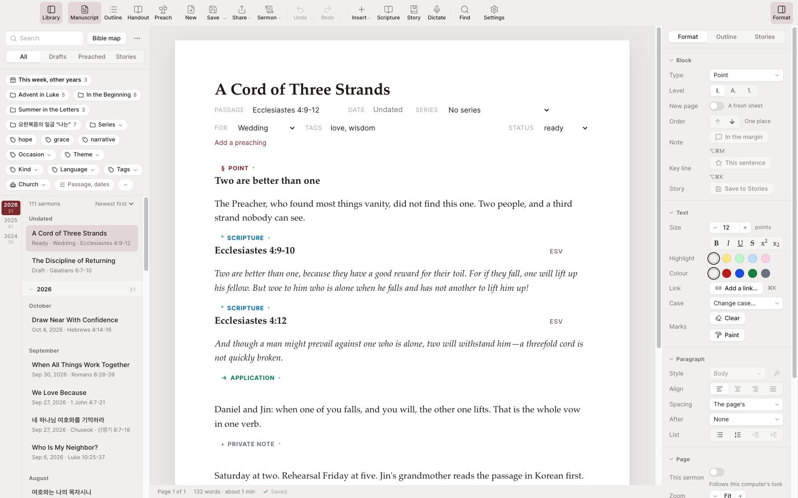
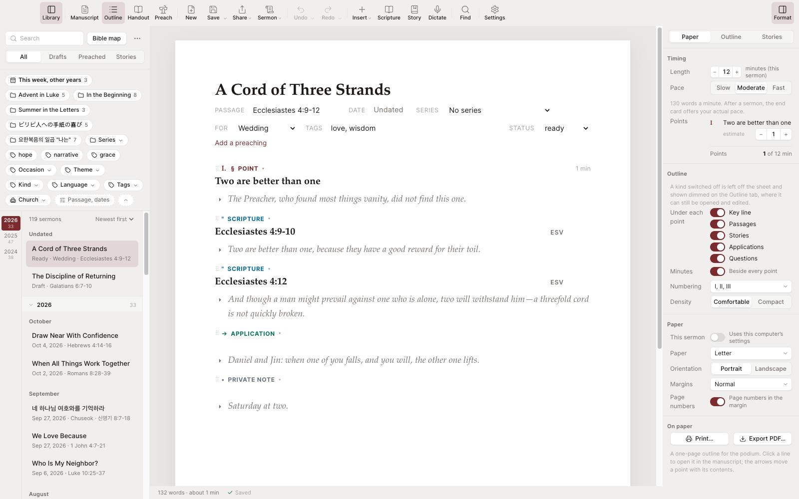
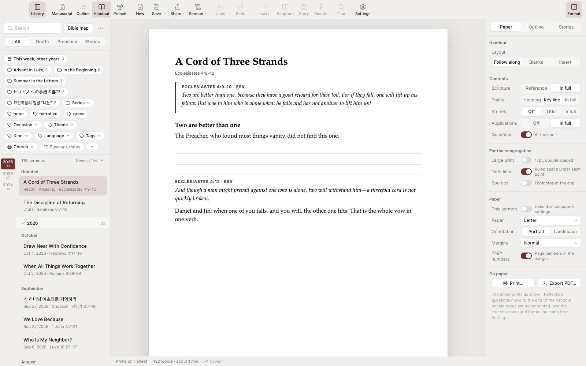
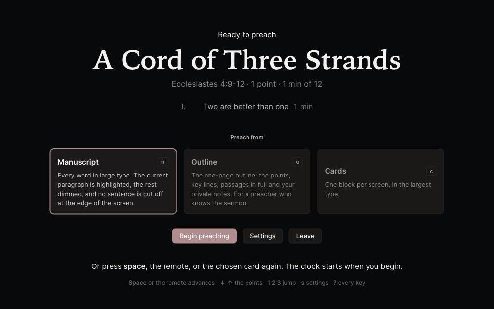
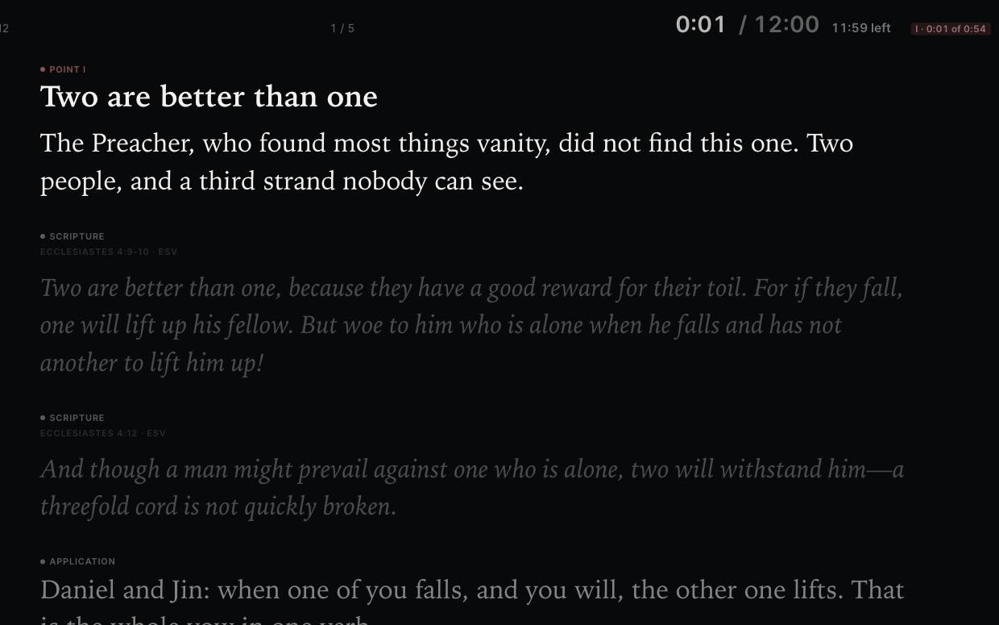
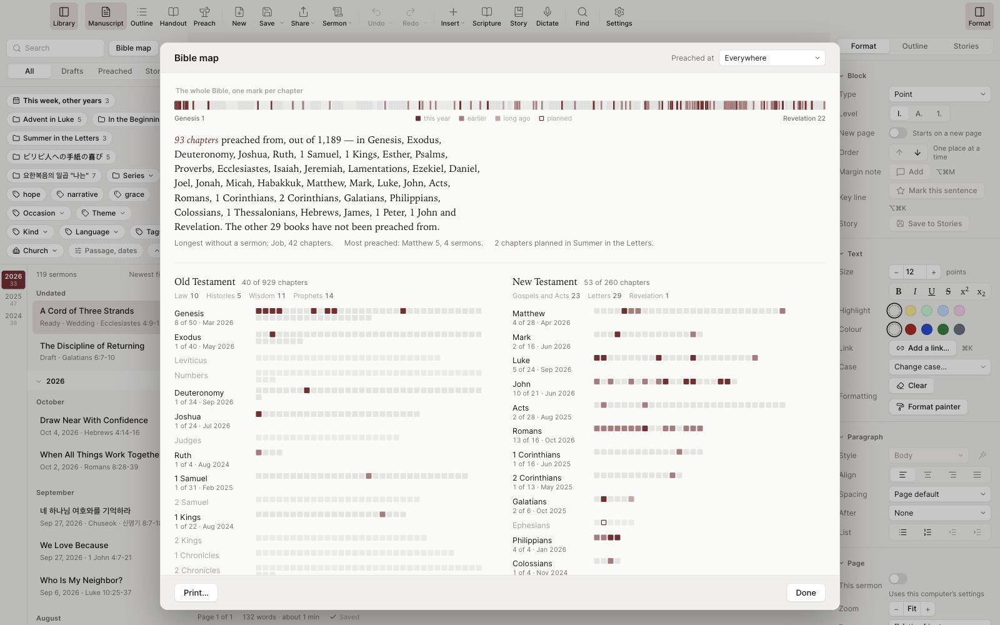

TuesdayThe manuscript
Type Romans 8:28 and the verse files itself under its reference. Points number themselves, a story you have told before is one press away, and the page saves as you write.
One draft becomes the manuscript you write from, the outline you check on Friday, the handout you print on Saturday, and the screen you preach from on Sunday. Plain files, on your own computer, in your own folder. For Mac and Windows.

One draft, four forms
Nothing is copied from one place to another. Each form is the same sermon, shown for the day it is needed.
Type Romans 8:28 and the verse files itself under its reference. Points number themselves, a story you have told before is one press away, and the page saves as you write.

The points with their minutes, the key line under each, the passages in full. One sheet to carry, and the minutes say where the sermon runs long.

The congregation's copy, with blanks to fill or the key lines in full, and the questions to take home at the end. Print it, or save it as a PDF for the bulletin.
Sunday
Full screen, large type, the clock. Read from the manuscript, the outline, or one card a screen; the paragraph you are on is lit, and nothing leaves the screen mid-sentence. Space, or the remote, goes on.


Nothing to install
This is the app, running in your browser with three years of one preacher's sermons in it, in English, Korean and Spanish.
Click anything, type anything: nothing you do here is saved, and nothing leaves this page.
Try
Your sermons are yours
In a folder you choose. A file written by any version opens in every later one, and you can read it without the app.
Keep the folder in iCloud Drive, Google Drive, OneDrive or Dropbox. Open SermonDesk on your other computer and press Use. Nothing is stored by us.
The app goes read-only. Open, search and print all of it for as long as you own the computer. A subscription buys writing and preaching, never access to what you wrote.
The library
Type Romans 8 and get every sermon that touched it, even one that quoted a single verse. Open a sermon and see what else touches its chapter, where else you told that story, and the rest of its series.
Tags complete as you type, so a slip of the shift key never makes a twin. What a sermon is for, a funeral, a wedding, Easter, is a word in the byline with its own chip.
And the map of the whole canon shows the chapters you have preached and the books you never have.

Fifteen languages
Every word of the app, the sixty-six books as your Bible names them, and dictation that hears "new paragraph" in your words. Chosen in Settings.
Price
$12.99a month
$119.99a year
The demo is the trial, and the download is free to read with.
The download opens, reads, searches and prints without a key. Writing and preaching from the podium start the moment the key arrives. Cancel from the billing page, the one your receipt links; everything keeps working to the end of the period you paid for.
What's new
The latest is 0.4.5. Every release explains what it brought, in the words the update line uses, and the app fetches it itself.
Good to know
Windows 10 and 11, and Macs with Apple silicon, an M1 or later. A tablet version is on the list for later; there are no plans for a phone.
In a folder you choose, one readable file each. Keep that folder in iCloud Drive, Google Drive, OneDrive or Dropbox to have them on every computer you use.
A Word file imports as a sermon, its passage read from the opening line in whatever language it was written. A whole folder, as Google Takeout delivers it, imports in one go. Going the other way, print or save PDFs, send a sermon to Word, or export the whole library as plain text at any time, with no key asked.
Nothing from your sermons, ever. The app makes two kinds of request: one checks your subscription, one checks for a new version. No analytics, no crash reports, no tracking.
No. The voice is a one-time download, 76 MB or 238 MB for the finer one, and it listens on your own machine in any of the fifteen languages.
Everything keeps working to the end of the period you paid for. Then the app goes read-only: every sermon still opens, searches and prints, and the podium waits for a subscription again.
From the billing page, the one your receipt links. Payments are processed by Lemon Squeezy, our merchant of record, whose name appears on your statement.
Email davislor@sarangbi.co. SermonDesk is new and keeps changing; if a change gets in your way, say so.
Terms and privacy
Your sermons are written to your own disk and never uploaded, read, or transmitted. They are not backed up by us either. That is the other side of the same promise.
When you buy, Lemon Squeezy handles your name, email, and payment details under their own privacy policy. We receive your name, email, and what you bought, and use them to send your key and reach you about the software. We do not sell or share them.
A subscription lets one person write with SermonDesk on up to three of their own computers.
The software is provided as is, without warranty.
SermonDesk is new, and it will keep changing. If a change gets in your way, tell us.
Built and supported by Sarangbi. Email davislor@sarangbi.co.